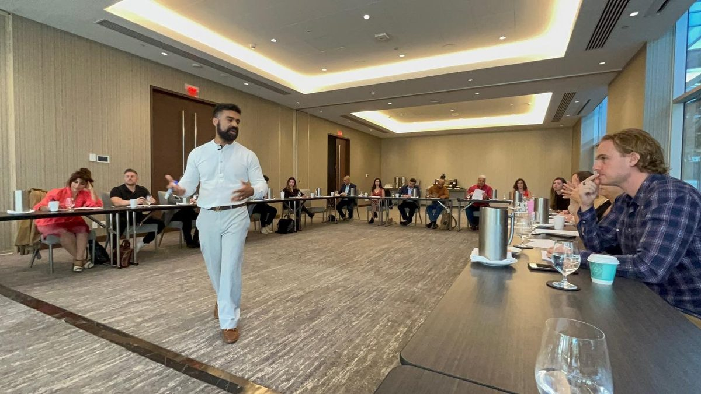

The Laws of Change · A free book
Most men die good at one thing. My work is to make sure that is not you.
You are here
Good at business.
- Spiritual
- Health
- Relationships
- Business
You need to be here
Good at life.
- Spiritual
- Health
- Relationships
- Business
The Laws of Change. Twelve laws, each with a true story and one move to make today. Free, 66 pages.


What change is made of.
Every act of change is made of the same five things. A person, holding a fallible instrument, closes a gap, in a world that runs on laws, among other people.
Fixing a company. Losing the weight. Saving a marriage. Coming back to your faith. Different work, same five things. We call them the five roots. Here they are, in plain words.
-
The Gap is the job.
Where you are now, and where you need to be. The distance between the two is the gap. Every piece of real work closes some of it.
-
Natural Law is the world.
It behaves the same way whether or not you agree. Push against a law and it pushes back. Work with it and it carries you. And time compounds every cause: what you do today is still paying you, or still costing you, years from now.
-
The Instrument is you.
You are the only tool you have for closing a gap, and you are not a perfect one. You get tired. You forget. You drift. But you can be sharpened.
-
Becoming is the biggest gap you will ever close.
The distance between who you are and who you were made to be. Every other gap you close either closes a piece of this one, or it does not.
-
The Arena is everyone else.
Your family, your team, your customers, the room you walk into. You never close a gap alone, and the gaps you close for other people are the fruit of the work.
You do not become someone in one big move. You become someone the way a gap closes: a piece at a time, in a world where time adds every piece up. Close the right piece today and time is on your side. Close nothing and it is against you. Give it a year of days and you are a different person, either way.
How the work goes.
You have one life and a deadline you did not set. Find what you were made for, put your life in order around it, and finish it.
Without it you get better at nothing in particular. With it, the work is always the same job. Five steps, in the same order, every day.
- The Gap
Close a piece of it today.
Find the distance between where you are and where you need to be, and close a piece of it today. Not all of it. A piece.
- The Instrument
Keep yourself sharp.
You close the gap with yourself, and you are a flawed tool. So you keep yourself sharp: rested, honest, and still learning.
- The Arena
Close it for other people too.
You close the gap among other people, and the gaps you close for them are the fruit. That is where the value is, and where your living comes from.
- Becoming
Count what actually happened.
At the end of the day, count. The count is not a report card. It is the material for the next turn, because it tells you who you are actually becoming, not who you said you would become.
- Natural Law
Go again.
Then the clock ticks and you go again. Time compounds every cause, so a piece a day, for a year of days, makes a different person. That is how you become: not all at once, but in time.
Start with the free book.
The Laws of Change is a short book: sixty-six pages, twelve laws. A law is just how something works, whether or not you agree with it. Each law comes with a true story and one move you can make today.
Read one law. Make the move. That is a piece of the gap, closed, and the first turn of the clock. The book starts where the work starts: where you are, where you need to be, measured honestly and exactly.
Who wrote it.


I'm Jean Louis Hardy: a husband, a father of five, and a builder of businesses in Houston.
My stepdad built a trucking company that everyone could see. What they could not see was his health, or how hard it was, late in his life, to set things right with his family. He died of a heart attack. He did not fail. Nobody showed him that a life has four parts, not one.
I gathered these laws because I needed them, at work and at home. Now I teach them, on stages and in small rooms. Read my story
The Research Group.

Reading a law changes nothing. Trying it does.
The Research Group is a small group of people who take these laws into their real companies and real homes, try them, and compare notes on what held up. Members get the complete book, every law and every story, and a room of people closing their own gaps while you close yours.
It starts with a free 20-minute call to see if it is a fit. No pitch. You decide.
Reading this page changed nothing.
I say that with affection. A law you have read about is a rumor. A law you have tried on a Tuesday, in your own kitchen or your own company, is yours.
So here is what to do. Get the free book. Read the first law tonight. Tomorrow, close one piece of the gap. Then the clock ticks, and you go again.
Doing nothing is the most expensive option.
Jean Louis
Hardy.
Husband, father of five, and builder of businesses.
Houston, Texas. Author of The Laws of Change.
My story
I own and run companies in a few different fields. So I spend my days where you do, between where things are and where they should be. Some days the gap is in a business. Some days it's at home, in my health, or in my own head.
For years I studied people who had closed big gaps and wrote down what held up. I traced each idea back to where it came from, put it in plain words, and held it to one question: does this help close the gap?
Those notes became the Laws of Change. The complete book is open to members of the research group, because the same laws that grow a company also steady a home.
What I believe
- You have one job: close your gap.
- Reality behaves the same way whether or not you agree.
- The spiritual walk comes first. Health, relationships and business are its fruit.
- Nothing great is built alone.
Start with the free book
The first 12 Laws of Change, each with a true story and one move to make today.